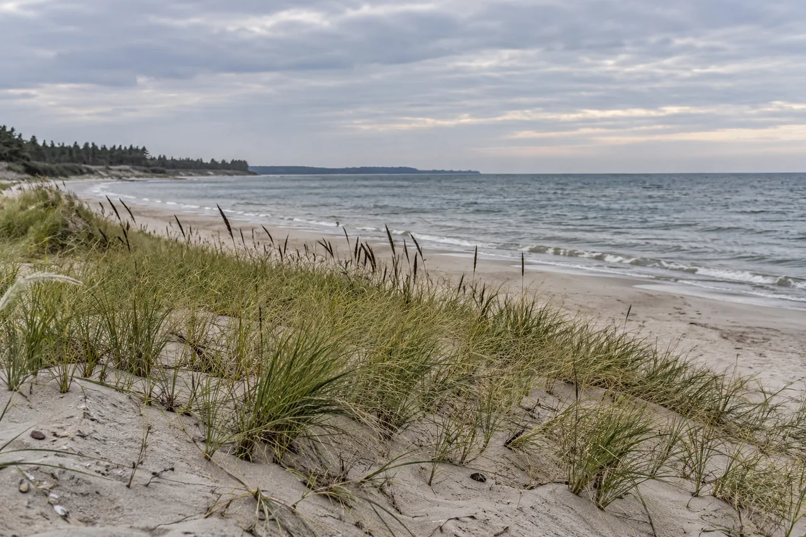

Кафедральный собор
Собор на острове Канта удобно включить в прогулку между городскими набережными. Внешний осмотр и посещение органного зала — разные части поездки.
 Маршруты БалтикиБалтика — это маршрут.
Маршруты БалтикиБалтика — это маршрут.
Балтийский
характер
рядом
Сценарии поездки · 50 мест
Собор у реки, сосновая тропа, городской променад — у каждой остановки свой масштаб. Найдите места для поездки и посмотрите, что можно соединить в одну прогулку.
50 мест
Места из подборки. Чтобы составить путь, учитывайте время на дорогу и остановки.
Собор на острове Канта удобно включить в прогулку между городскими набережными. Внешний осмотр и посещение органного зала — разные части поездки.
Мемориальное место у стен Кафедрального собора. Его можно посмотреть в одной остановке с собором, не закладывая отдельный переезд.
Остров между рукавами Преголи объединяет собор и зелёные прогулочные пространства. Это связующая остановка между Рыбной деревней и набережной музея.
Городской квартал у Преголи, который удобно смотреть с набережной. Здесь прогулка может продолжиться к Медовому мосту и острову Канта.
Вертикальный ориентир Рыбной деревни рядом с набережной. Подъём на смотровую и прогулка у здания требуют разного времени.
Мост связывает остров Канта с районом Рыбной деревни. Он полезен как переход между остановками, а не как повод для отдельного переезда.
Музейное судно на набережной Мирового океана. Включайте его в прогулку вдоль реки, а внутреннюю экспозицию планируйте как отдельное посещение.
Экспозиционный корпус на музейной набережной. Рядом расположены другие корпуса и суда, поэтому здесь легко продлить городской маршрут.
Корпус Музея Мирового океана у Преголи. Его можно выбрать основной музейной остановкой дня и оставить набережную для прогулки до или после входа.
Музейное судно у набережной Мирового океана. Хорошая точка для знакомства с устройством маяка в контексте прогулки по речному берегу.
Ворота у южного берега Преголи, в стороне от острова Канта. При включении в маршрут учитывайте переход через реку и подход по городским улицам.
Исторические ворота в южной части города. Их удобно рассматривать в маршруте по южному берегу, а не добавлять без расчёта дороги к северным воротам.
Исторические ворота на восточной стороне центральной части Калининграда. До острова Канта отсюда требуется самостоятельный городской переход.
Ворота в восточной части города. Подходят для сочетания с Королевскими воротами и дальнейшей прогулкой к Преголе.
Музей в историческом оборонительном сооружении у Верхнего озера. В одном районе можно соединить архитектуру, выставку и прогулку у воды.
Архитектурная остановка рядом с Музеем янтаря. Эти два объекта можно смотреть последовательно без переезда между ними.
Кирха находится в южной части города и связана с органной музыкой. Это отдельный район относительно Амалиенау.
Кирха у Центрального парка — удобный ориентир прогулки по Амалиенау. Внешний осмотр можно совместить с парком и соседними улицами.
Зелёная остановка рядом с кирхой памяти королевы Луизы. Здесь городской маршрут можно сделать спокойнее, оставив время на прогулку по аллеям.
Один из архитектурных ориентиров Амалиенау. В маршруте по виллам интерес представляет внешний облик здания и улица вокруг него.
Архитектурная остановка в районе Амалиенау, рядом с другими историческими виллами. Подходит для неспешного знакомства с кварталом пешком.
Музейная остановка в районе исторической городской застройки. Её можно добавить к архитектурной прогулке, если время посещения согласовано заранее.
Большая территория для самостоятельного посещения в городе. Лучше выделить ей отдельную часть дня, чем считать короткой остановкой между музеями.
Небольшая архитектурная остановка в Центральном парке. Её удобно посмотреть после кирхи, оставаясь в зелёной части прогулки.
Прогулочная линия вдоль моря. Карта отмечает один участок променада; продолжительность прогулки зависит от выбранного начала и места разворота.
Городская прогулочная улица, которую удобно соединить с выходом к морю. Фасады и небольшие остановки лучше смотреть пешком.
Музейная точка в Зеленоградске, связанная с кошачьей темой города. Подходит как отдельное посещение внутри прогулки по центру.
Музейная остановка в городской части Зеленоградска. Её можно выбрать для знакомства с историей курорта перед прогулкой к морю.
Тематический музей в Зеленоградске. Подходит для отдельного интереса к необычным коллекциям, а не как обязательная остановка любой поездки.
Историческое здание в Зеленоградске. Его можно рассмотреть в городской части прогулки, до выхода на открытый морской берег.
Историческое здание курортной гостиницы в центре Зеленоградска. Удобная архитектурная остановка на пути между городскими улицами и морем.
Небольшой ориентир у морской прогулочной части Зеленоградска. Его удобно включать по пути, не строя вокруг него отдельный день.
Компактная зелёная остановка в центре Зеленоградска. Подходит для паузы между городской прогулкой и выходом к морю.
Небольшая городская деталь кошачьей темы Зеленоградска. Её удобно заметить по пути, а не выделять как самостоятельную экскурсию.
Лесная остановка на Куршской косе с выделенными пешеходными дорожками. Это самостоятельная прогулка, до высоты Эфа требуется переезд.
Начало пешеходной прогулки к смотровым высоты Эфа. Планируйте время на подъём и возвращение к исходной точке.
Смотровая точка в конце подъёма по маршруту высоты Эфа. До неё нужно пройти от начала тропы, затем вернуться по разрешённому пути.
Смотровая на отдельном пешеходном маршруте Куршской косы. Её нельзя считать соседней остановкой озера Лебедь без расчёта переезда.
Станция кольцевания птиц на Куршской косе. Посещение зависит от работы станции и организации экскурсий.
Лесной туристский маршрут в южной части косы. Подходит для самостоятельной остановки до дальнейшего движения к северным тропам.
Морской берег рядом с посёлком Лесной. Выход к пляжу можно сочетать с остановкой в посёлке, не превращая его в переход по всей косе.
Ориентир морской стороны посёлка Лесной. Удобно рассматривать вместе с береговой прогулкой рядом с посёлком.
Прогулочная линия у моря ниже городской части Светлогорска. При планировании учитывайте спуск и возвращение наверх.
Архитектурный ориентир в верхней части Светлогорска. Его удобно смотреть до спуска на морской променад.
Озеро в городской части Светлогорска, в стороне от морского берега. Для спокойного дня можно выбрать прогулку у воды без спуска к морю.
Городская деталь у морской прогулочной части Светлогорска. Удобна как остановка по пути вдоль променада.
Морской ориентир Балтийска рядом с каналом. Его можно смотреть с городской стороны, отдельно от поездки на Балтийскую косу.
Музейная остановка в Балтийске. При поездке из Калининграда выделите время на городскую часть и возвращение.
Морской берег у центральной части Янтарного. Для спокойного дня его можно сочетать с променадом, оставив время на дорогу из других городов.
Береговая прогулочная часть Янтарного. Удобна для соединения городского подхода с выходом к пляжу.
Готовый путь
Пешком · Калининград · 1,6 км
У вилл Лео и Шмидт прогулка начинается с архитектуры, у кирхи памяти королевы Луизы переходит к аллеям Центрального парка. Два часа на этот путь; для «Альтес Хаус» добавьте отдельное время.
Пешком · Калининград · 2,3 км
Преголя ведёт от собора через Медовый мост и Рыбную деревню к музейной набережной. Здесь стоят «Витязь» и «Планета Океан». Три часа на прогулку; посещение музеев займёт дополнительное время.
Пешком · Калининград · 4,5 км
От Королевских и Закхаймских ворот путь выходит к Рыбной деревне, острову Канта и музейной набережной. Около 4,5 км: городская архитектура постепенно уступает место реке.
Пешком · Куршская коса · 1,1 км
Дорожки Танцующего леса ведут между соснами и возвращают к началу прогулки. Около часа с остановками; до входа на тропу нужно добраться транспортом. Высота Эфа — отдельная поездка.
Пешком · Куршская коса · 1,9 км
От входа на тропу путь поднимается к смотровой Эфа, затем возвращается по тому же разрешённому маршруту. Почти 2 км со ступенями и остановкой у дюн; дорогу до тропы рассчитайте отдельно.

Обновлено 2 октября 2026 года. Координаты и линии — по открытой карте; доступность остановок проверьте перед поездкой.